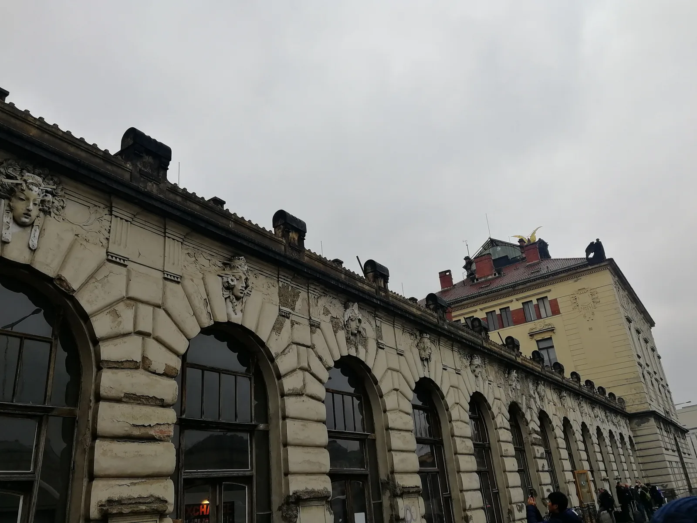
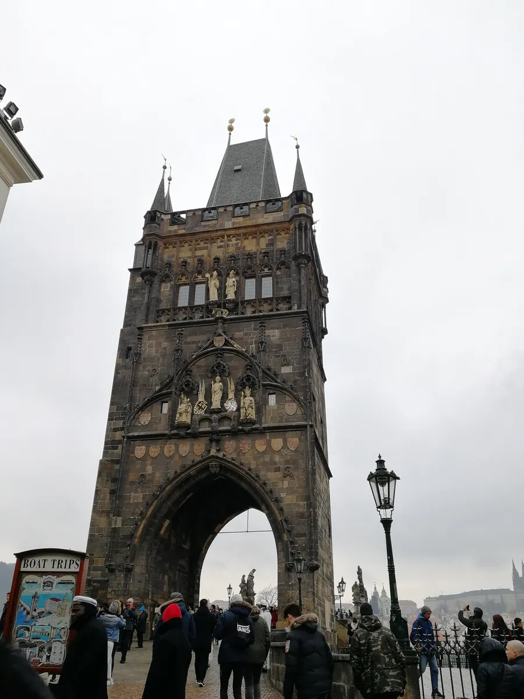
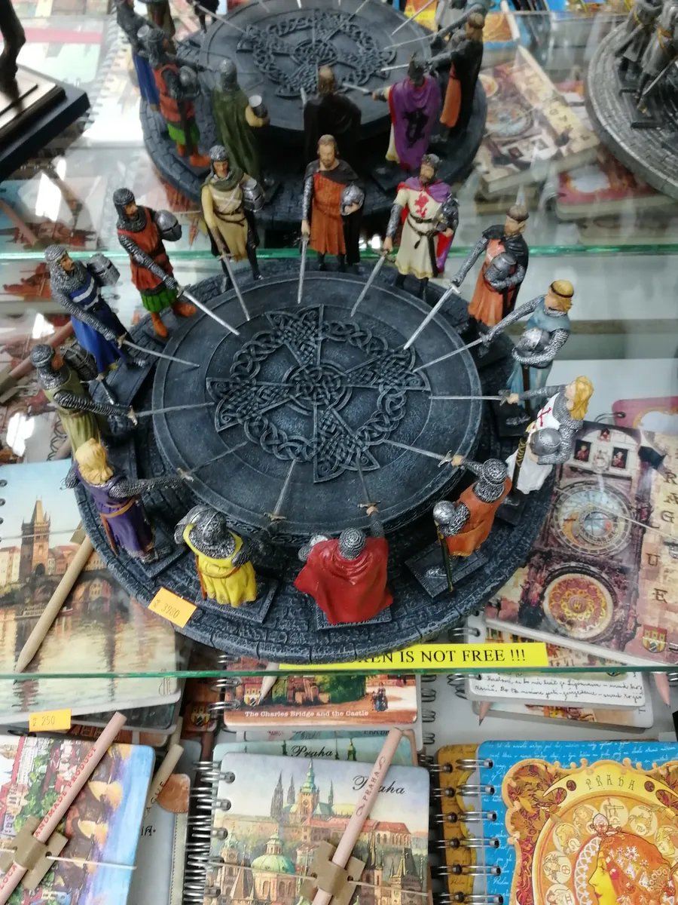
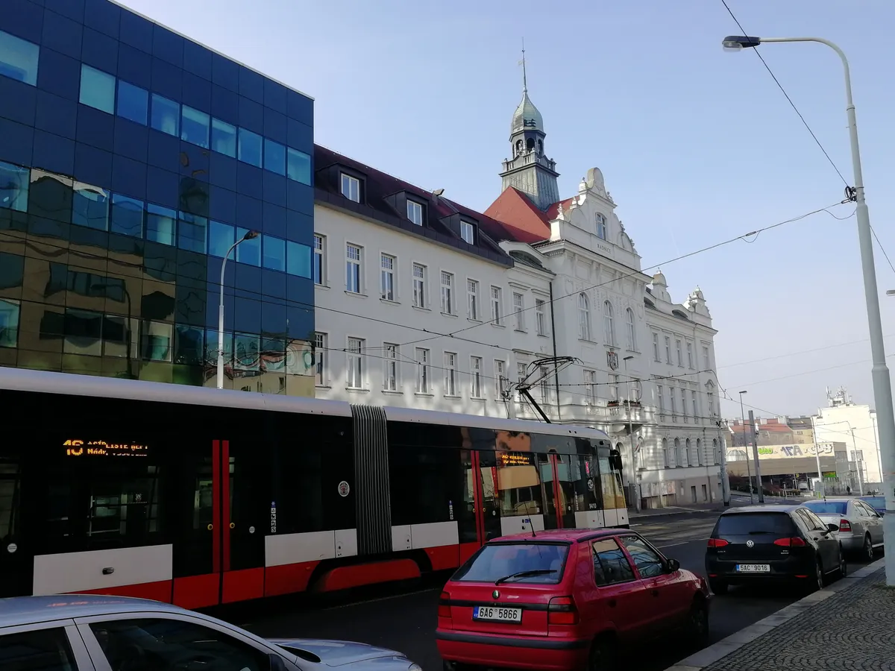
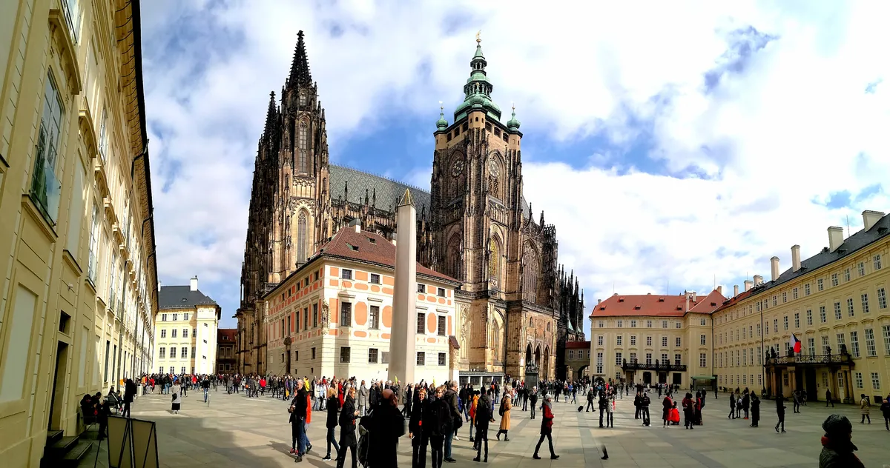

布拉格：从查理大桥到斯柯达，一座城市的全球化两面
Prague — from Charles Bridge to Skoda, two faces of a city's globalization.

（2017 年 · 捷克 · 布拉格）
老城广场：900 年里，一直是这座城市的心脏
布拉格老城广场已经存在了 900 多年，是这座城市历史上最核心的集会场所。广场上的老市政厅建于 1338 年，墙上那座著名的天文钟建于 1410 年，是中世纪欧洲最精密的机械装置之一——上层的钟根据地心说原理设计，一年绕转一周，下层的钟一天绕转一圈，每逢整点，十二门徒的雕像会依次从窗口现身向路人「鞠躬」，配合鸡鸣报时，600 年来风雨无阻。这座钟不只是一个计时工具，它本身就是布拉格作为中欧科学技术重镇的一个物证——从 13 到 15 世纪，布拉格曾是中欧最重要的经济、政治和文化中心之一，查理大学也创立于这个时期（1348 年），是中欧历史最悠久的高等学府。
广场周边哥特式的泰恩教堂、巴洛克风格的圣尼古拉教堂，还有广场中央那座纪念宗教改革先驱扬·胡斯的雕像，一层一层地把布拉格几百年的宗教、政治历史叠在了同一片空间里。


查理大桥：一座桥，连起城堡区和老城，也连起了几百年的雕塑艺术
查理大桥建于 14 世纪，横跨伏尔塔瓦河，全长 520 米，是欧洲现存最古老、最长的石桥之一，历代捷克国王的加冕游行都要从这座桥上走过。桥上矗立着 30 尊 17 到 18 世纪捷克巴洛克艺术大师雕刻的圣人雕像，被称为「欧洲的露天巴洛克塑像美术馆」。今天桥上挤满了街头艺人和手工艺摊位，但这座桥本质上从来不是一个观光景点，它是布拉格城堡区和老城之间几百年来唯一的实体连接——某种意义上，这座桥本身就是布拉格这座城市「连接」这个功能的最早雏形。


布拉格城堡：世界上最大的古城堡建筑群
布拉格城堡是世界上最大的古城堡建筑群之一，集教堂、宫殿、庭院于一体，始建年代可以追溯到 9 世纪，历经上千年的扩建修缮。圣维特大教堂就坐落在城堡内，始建于 1344 年，是捷克最重要的哥特式建筑之一。今天的布拉格城堡依然是捷克总统的官邸所在地，和维也纳霍夫堡皇宫「从帝王驻地变成总统官邸」的转型轨迹很相似——中欧这些老牌欧洲城市，似乎都习惯让新政权直接住进旧王权的躯壳里，而不是另起炉灶。
斯柯达：一辆车的命运，浓缩了捷克这个国家的全球化故事
如果说布拉格的老城广场、查理大桥、城堡讲的都是这座城市「过去」的分量，那捷克这个国家真正走向全球市场，靠的其实是一个你可能天天在中国街头看到、却未必知道背后故事的品牌——斯柯达。
斯柯达的前身劳林与克莱门特公司（L&K）1895 年在捷克创立，最初做的是自行车和摩托车，1905 年才推出第一款四轮汽车。1925 年，L&K 被捷克当时最大的工业集团斯柯达·皮尔森收购，「斯柯达」这个品牌才真正诞生。二战期间捷克被德国占领，斯柯达的汽车生产一度停摆；二战后又经历了几十年计划经济体制下的封闭生产，产品线单一，年产量长期停留在 18 万辆左右的水平。
真正的转折发生在 1991 年——捷克刚刚结束社会主义体制、走向市场经济仅仅两年，斯柯达就选择加入德国大众集团，大众先收购了 70% 的股份，2000 年又收购了剩余 30%，斯柯达从此成为大众集团旗下继大众、奥迪、西雅特之后的第四大品牌。这次「被收编」，在斯柯达自己的历史叙事里，被形容为和当年「斯柯达品牌诞生」同等重要的转折点——依靠大众集团的技术平台、管理体系和全球渠道，斯柯达在短短十几年里，从一家只生产单一车型、年产 18 万辆的封闭工厂，变成了在全球 90 多个国家销售、年产量超过 50 万辆的国际化车企。
这个故事后来还和中国紧紧绑在了一起：2007 年斯柯达进入中国市场，首款引入车型明锐一炮而红；自 2010 年起，中国已经成为斯柯达全球最大的单一市场。也就是说，一个诞生在布拉格附近、几乎被计划经济体制困死的百年老品牌，靠着「加入一个更大的全球化集团」这一步，不仅活了下来，还在几十年后把最大的市场做到了中国。
从斯柯达到比亚迪：同一道全球化考题，换了做题的人
斯柯达 1991 年「加入大众」这件事，放在 30 年后的今天看，有一种奇妙的镜像感——今天轮到中国车企，在用类似的逻辑往欧洲这片土地上走，只是角色换了个方向。
2026 年上半年，中国新能源汽车出口 235.5 万辆，同比增长超过一倍，出口均价也在同步提升，不再是单纯靠低价走量。头部企业里，比亚迪 2025 年海外销量已经突破 100 万辆，2026 年出口目标一度上调到 150 万辆；奇瑞多年深耕海外渠道，已经被不少海外用户当成「本地品牌」来看待；吉利一季度海外营收同比增长超过一倍。更关键的变化是「从产品出海到产能出海」——比亚迪在匈牙利的工厂计划 2026 年第二季度投产，一期产能 15 万辆，远期规划扩到 30 万辆；换句话说，中国车企不再满足于把车造好了运过去卖，而是直接把工厂开到了欧洲本土，这和斯柯达当年被大众收编、纳入其全球生产网络的逻辑，本质上是同一件事的两种做法：一个是被更大的全球化体系「收编」进去，一个是自己带着资本和产能「走出去」。
这条路眼下也并不轻松。欧盟已经对中国产电动车加征反补贴关税，美国维持 100% 的高关税，再加上电池碳足迹披露、数据合规、本地化生产要求这些非关税壁垒，行业里已经有分析认为，中国车企短期能触达的海外市场存在一个大约 25% 的份额天花板。也就是说，今天中国汽车出海走的这条路，比斯柯达当年「嫁入」大众集团要复杂得多——斯柯达当年只需要接受被整合进一个现成的全球体系，而中国车企现在要做的，是一边自己搭体系、一边应对越来越高的准入门槛。
写在最后
站在布拉格老城广场回头看斯柯达这个百年品牌走过的路，某种意义上是给今天的中国汽车产业提了一个问题：全球化从来不是选择「要不要走出去」，而是选择「用什么方式走出去」——是像斯柯达一样把自己嵌进别人的体系，还是像今天的中国车企一样自己带着产能和资本重新建一套体系。两条路径都能走通，但要付出的时间和代价完全不一样。
全球化从来不是选择要不要走出去，是选择用什么方式走出去——把自己嵌进别人的体系，还是自己带着资本，重新建一套体系。
——董立鑫 海鑫汇创始人兼执行总裁，新加坡世贸秘书长兼首席运营官
布拉格这座城市本身，像是一座活的历史标本——900 年的广场、几百年的桥、上千年的城堡，几乎凝固不动。但捷克这个国家真正意义上「走出去」、被全世界认识，靠的却不是这些凝固的历史，是斯柯达这样一个愿意在关键节点把自己交给更大体系的企业。老城广场教你怎么「被记住」，斯柯达教你怎么「被全世界买单」——这是同一片土地上，两种完全不同、但都行得通的全球化方式。
本文整理自董立鑫（Bruce Dong）海外产业考察记录，首发于海鑫汇。